InStyle
User Research | UI Design | Micro interactions
Tools:Figma and Adobe AfterEffects
Designed an app interface for an online fashion business, InStyle with special attention to user experience created by the use of micro-interaction.
User Persona

User Needs
- Browse clothing options.
- Clear categories for clothes.
- Recommendations for related products.
- Place an order for clothes.
- Check size and color availability.
- Check customer reviews if available.
- Add clothes to shopping bag for future reference.
- Favorite clothes to save them for later.
User Pain Points
- A lot of online shopping platforms are not user friendly.
- May find the process of buying clothes long and tedious.
- Forget about items they favorited or left in the shopping bag.
- May find it hard to sort through different categories of clothes.
Wireframes
Created multiple wireframes to brainstorm different ideas and ways of portraying the interface. The task flow covers all the potential pages on the app. The aim was to best utilize the space to present all the necessary information in a way that did not feel overwhelming.
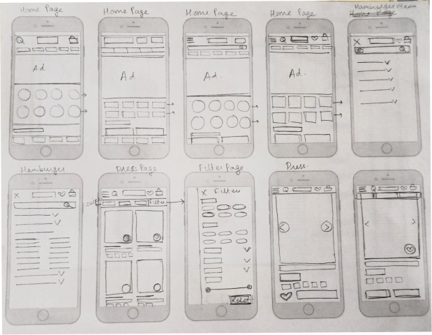 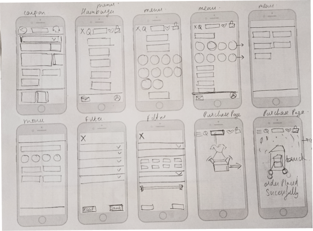 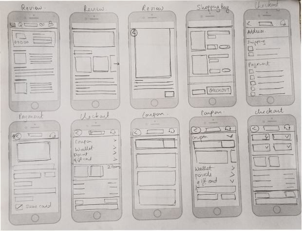Components
The thought behind the color scheme was to pick something fun and whimsical since the target users are mostly younger. Most of the components were built from scratch to inculcate micro-interactions in the design. A component library helped maintain consistency while designing across various screen sizes and pages.
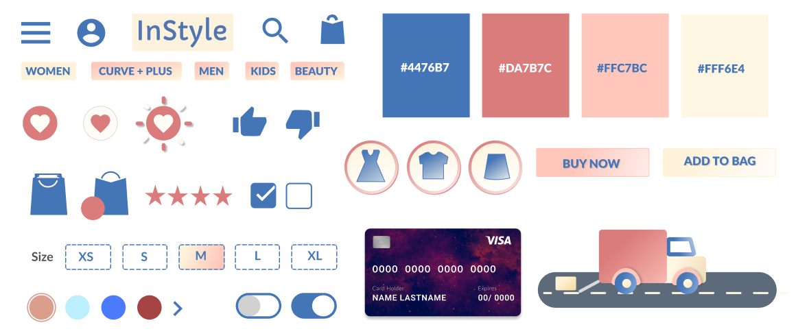App Interface
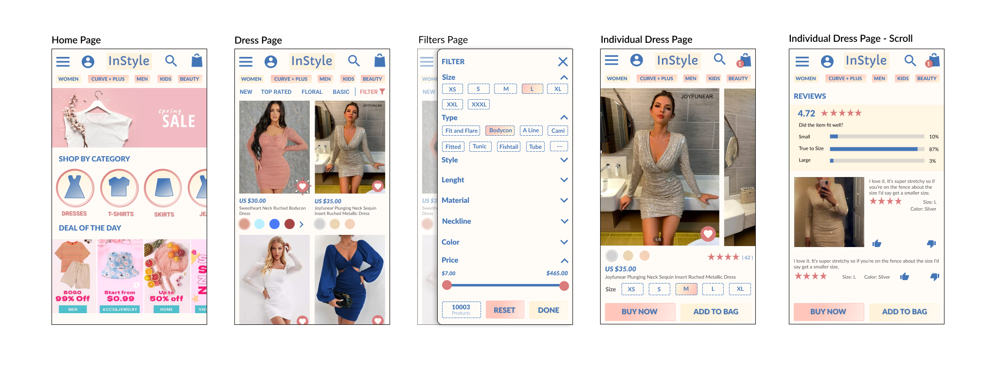 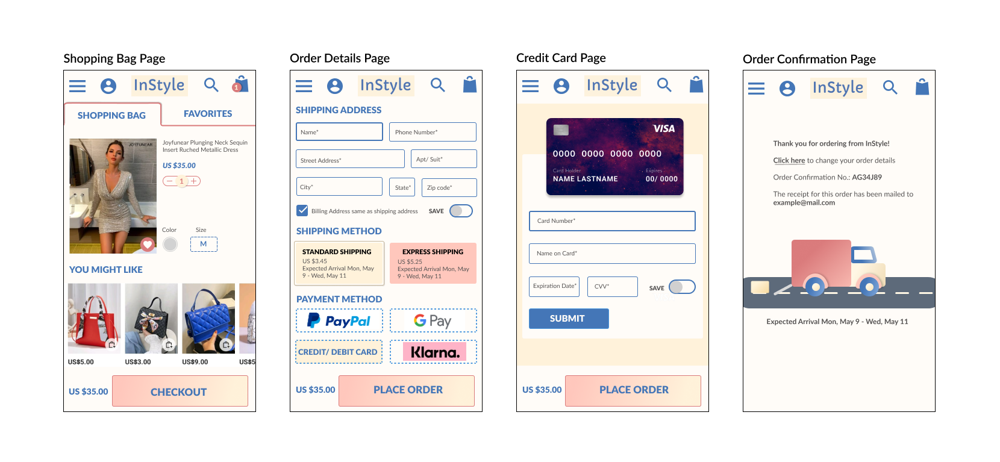Interaction Flow
Mapping out the interaction flow on each page. The interactions are broken down into 4 parts - Triggers (actions that start a micro-interaction), Rules (conditions for the micro-interactions), Feedback (visual cue that alerts the user of the action taking place) and loops (repeatability of the micro-interactions) based on the categorization mentioned by Dan Saffer in his book 'Microinteractions'.
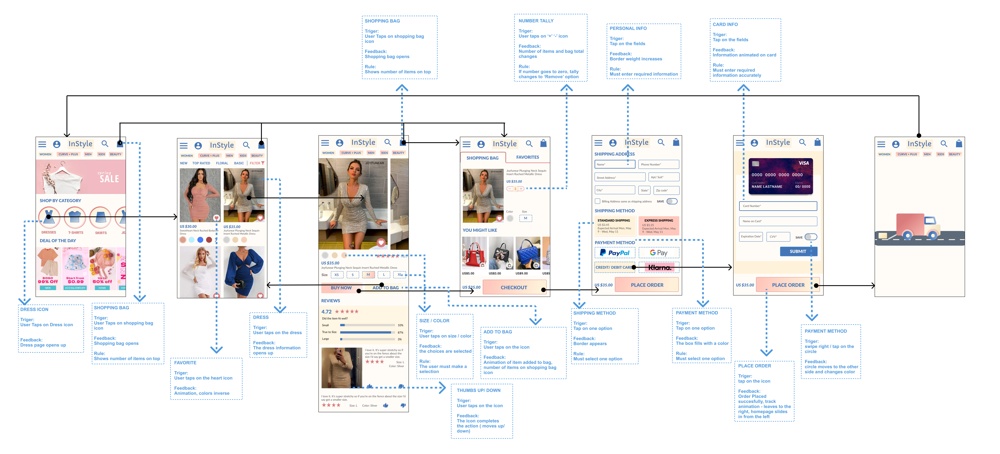Interaction Guides
Created sketches to plan out the bigger micro-interactions. These guides helped make the ideas more concrete by going over the nuances and the state of the elements under different circumstances.
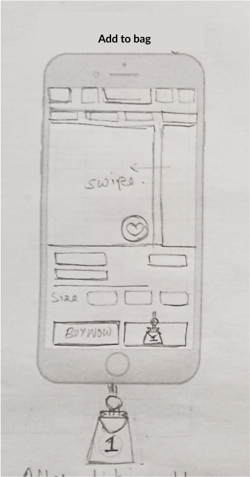After clicking the 'Add to Bag' button, the text disappears, the animation of a bag opening up comes up with a circle falling in it and the number of items in the bag shows up on the circle.
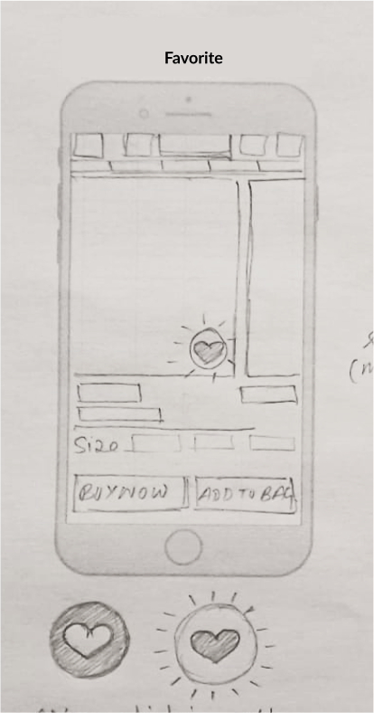After clicking the 'Favorite' button, the button will shrink and enlarge and the colors of the button will interchange with lines outside the button to resemble a heart popping.
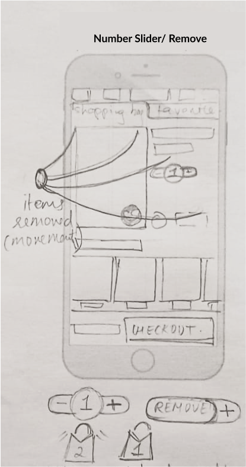When the number of items turn 0, the button turns into a 'Remove' button with a '+' on the side if the item was deleted accidentally. If the item is removed, the content is swished off the page.
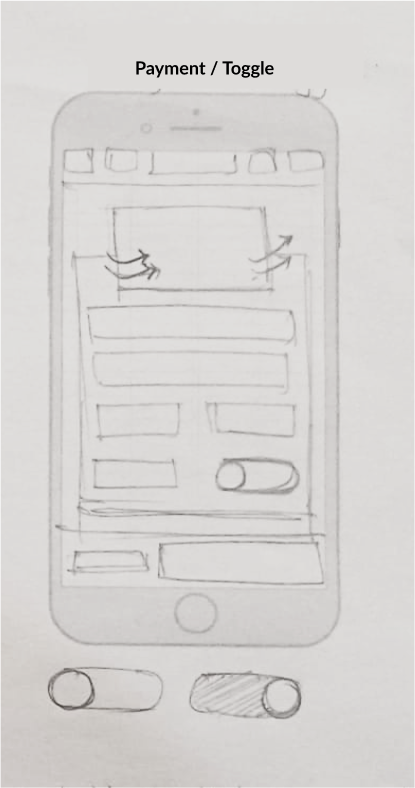This credit card information micro-interaction builds the card as the information is entered and flips the card for the CVV and then flips it back again. Toggle key saves card information for future.
High Fidelity Prototype
The high-fidelity prototype was created using the existing designs from Figma and editing them in Adobe AfterEffects to watch the micro-interactions play out in real-time. A user flow - buying a dress - is used to show the micro-interactions on the different pages.
Project Duration: 10 weeks
Next